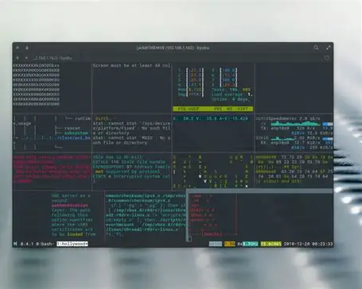

Learning HTML and Linux Commands
Introduction
Basically, learning the command line is eminently important for web developers. It's advantageous for projects you're working on now, and also gives you skills that are totally transferable to other development contexts, so don't delay on boning up on this area of interest.
Common Linux Commands
- ls -l
- List files in a directory
- M.C. new_directory
- Create a new directory
- rm file.txt
My Linux Command Screenshot

Types of Lists in HTML
- Ordered List
- unOrderd List
- Description List
- Nestead Lists
- Customs List
- bash
- CopyEdit
- touch myfile.txt